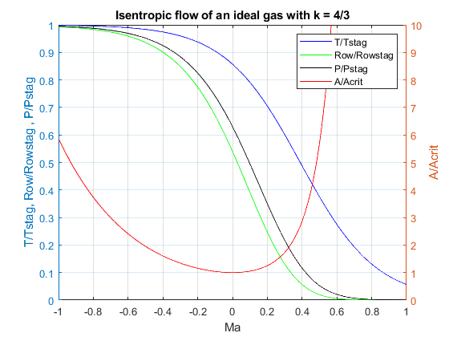

k = (4/3);
Arat = @(x) (1/x)* ((1 + ((k-1)/2)*x^2)/(1+((k-1)/2)))^((k+1)/(2*(k-1)));
Trat = @(x) 1/(1+((k-1)/2)*x^2);
Rrat = @(x) Trat(x)^(k/(k-1));
Prat = @(x) Trat(x)^(1/(k-1));
mach = 0.1:.01:10;
AratVal = zeros(1,length(mach));
TratVal = zeros(1,length(mach));
RratVal = zeros(1,length(mach));
PratVal = zeros(1,length(mach));
for i = 1:1:length(mach)
AratVal(i) = Arat(mach(i));
TratVal(i) = Trat(mach(i));
RratVal(i) = Rrat(mach(i));
PratVal(i) = Prat(mach(i));
end
yyaxis left
plot(log10(mach), TratVal, 'b-', log10(mach), RratVal,'g-',log10(mach),PratVal,'k-')
ylabel('T/Tstag, Row/Rowstag , P/Pstag')
hold on
grid on
yyaxis right
ylim([0 10])
plot(log10(mach),AratVal, 'r-')
ylabel('A/Acrit')
legend('T/Tstag','Row/Rowstag','P/Pstag','A/Acrit')
xlabel('Ma')
title('Isentropic flow of an ideal gas with k = 4/3')
